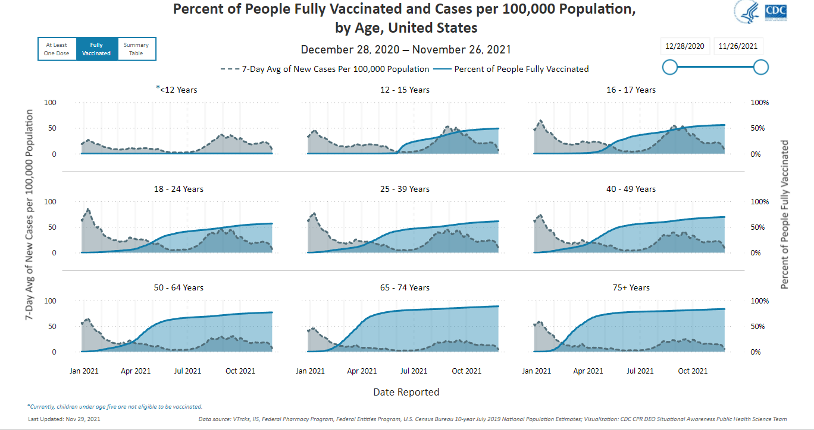
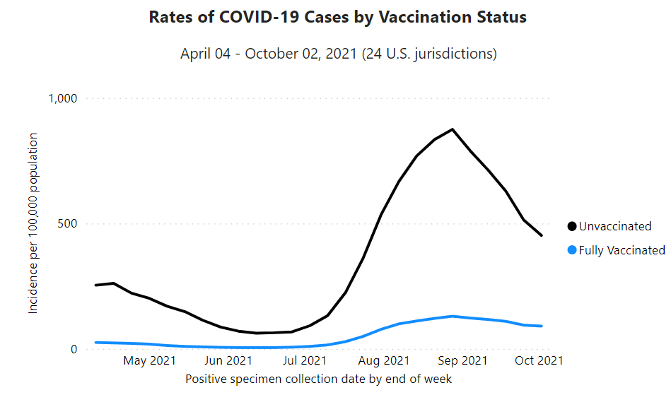

Since COVID-19 was discovered in November 2019 and began to spread worldwide in January 2020, it has resulted in severe social and economic disruption around the world so far. Also, the pandemic has raised issues of racial and geographic discrimination, health equity, and the balance between public health imperatives and individual rights. COVID-19 symptoms range from none to life-threatening. Severe illness is more likely in elderly patients and those with certain underlying medical conditions.
Currently, the most effective preventive method is to vaccinate against COVID-19. Several vaccines have been approved and distributed in various countries, which have initiated mass vaccination campaigns since December 2020. The vaccination rate is very effective for COVID-19 infection, especially for older people.

As of now, 70% of the population have received at least one dose of the vaccine in the United States, 60% have been fully vaccinated, and 10% have received boosters. Since the advent of the COVID-19 vaccine, the infection rate and death rate of the vaccinated population is far lower than that of the unvaccinated population.

Vaccinations completed numbers in each state:
Vaccinations completed ratio in each state :
In order to ensure people's health and safety, we believe that the more people vaccinate, the more beneficial it will be to the community and society. In our project, our goal is to explore the factors that affect people's willingness to vaccinate. For this we put forward four hypotheses:
- The influence of people's tweeting mood on vaccine willingness on social media. Increased fear and sadness may increase people's willingness to get vaccinated.
- The severity of the epidemic on people's willingness to vaccinate. The increase in the number of deaths and patients may increase people's willingness to vaccinate.
- The impact of the degree of utilization of medical resources on people's willingness to vaccinate. The increasement in the number of people in hospitals and ICUs may increase people's willingness to be vaccinated.
We collected data related to COVID-19 and applied data analysis methods to try to find patterns from the data to support our hypothesis. Hopefully through our research, we can find the main factors that affect people's willingness to vaccinate and propose methods that can promote people to vaccinate against COVID-19.